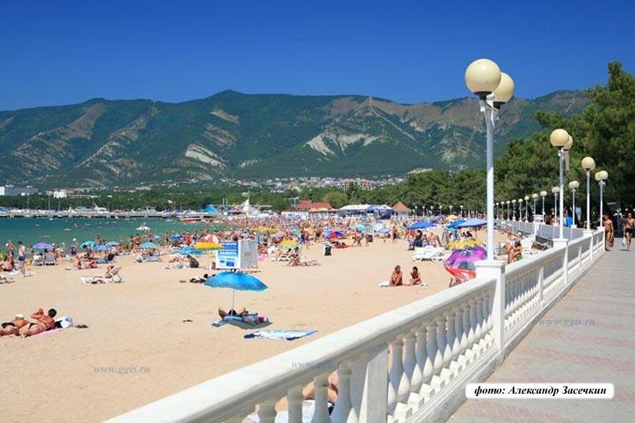

Город
Геленджик
Геленджик с высоты 640 м над уровнем моря .jpg
Флаг Герб
Флаг Герб
44°33′39″ с. ш. 38°04′36″ в. д.HGЯO
Страна Россия
Субъект Федерации Краснодарский край
Городской округ город-курорт Геленджик
Глава городского округа Хрестин Виктор Александрович
История и география
Основан в 1831 году
Прежние названия Торик, Пагры, Ептала
Город с 1915 года
Площадь 19,25 км²
Высота центра 15 м
Тип климата средиземноморский
Часовой пояс UTC+3
Население
Население ↗76 830[1] человек (2018)
Плотность 3991,17 чел./км²
Агломерация ↗117 546[1] человек (2018)
Национальный состав русские, греки, армяне, украинцы
Названия жителей геленджича́не, геленджича́нин, геленджича́нка
Цифровые идентификаторы
Телефонный код +7 86141
Почтовые индексы 353460
Код ОКАТО 03 408
Код ОКТМО 03 708 000 001
gelendzhik.org
Геленджик (Россия)Green pog.svgГеленджик Red pog.svgМосква
Геленджик (Краснодарский край)Orange pog.svgКраснодар Green pog.svgГеленджик
Commons-logo.svg Аудио, фото и видео на Викискладе
Вид на северо-восточную часть Геленджикской бухты, облачная «борода» над хребтом Маркотх (середина зимы 2006)
Вид на Геленджикскую бухту с вершины канатной дороги
Геленджи́к — город на юге России, в Краснодарском крае. Административный центр муниципального образования город-курорт Геленджик.
Крупный курорт на Черноморском побережье Кавказа. С 23 марта 2001 года является курортом федерального значения.
Город расположен у побережья Чёрного моря вокруг Геленджикской бухты, у подножия западной части горного хребта Маркотх. Вход в бухту, ширина которой приблизительно равняется морской миле, расположен между двумя мысами: северный называется Тонким мысом, южный — Толстым, поскольку у южного мыса высокий и обрывистый берег.
Город находится в 25 километрах к юго-востоку от Новороссийска, в 180 км к юго-западу от Краснодара и в 250 км к северо-западу от Сочи (по дороге).
